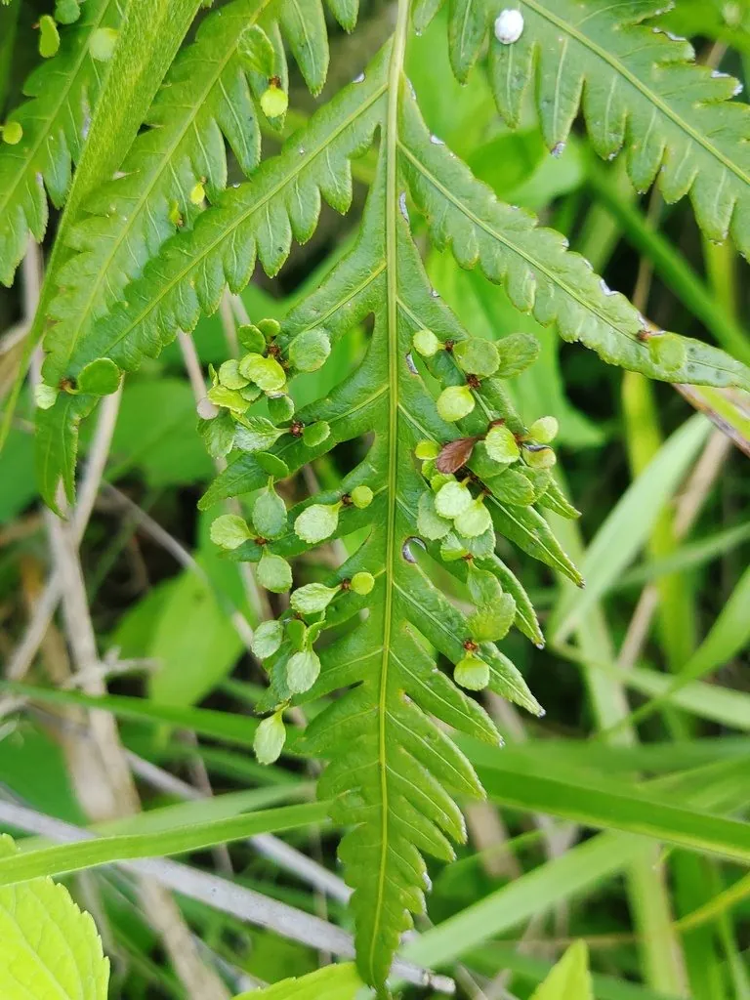

蕨类与裸子植物 · 植物界
胎生狗脊 Woodwardia prolifera

乌毛蕨科狗脊属大型陆生蕨类，叶面常萌生小芽进行无性繁殖，故名“胎生”，是南方林下与溪边常见的蕨类。
- 分类
- 门蕨类植物门纲水龙骨纲目水龙骨目科乌毛蕨科属狗脊属
- 栖息环境
- 海拔 300–1200 米的山谷溪边与林下阴湿处，喜温暖湿润、半阴
- 地理分布
- 中国南方及日本；华东、华南、西南常见
- 保护级别
- IUCN 暂无评估；分布较广，野生种群稳定
物种志
胎生狗脊为大型陆生蕨类，高 1–2 米，根状茎粗壮、横走，密被褐色鳞片。叶簇生，二回羽状，长 1–2 米，羽片披针形，边缘具细锯齿；叶面常沿羽轴萌生珠芽状小芽，脱落后可长成新株，因此得名“胎生”。孢子囊群长圆形，沿主脉两侧排列，囊群盖肾形。
本种分布于中国南方及日本，生于海拔 300–1200 米的山谷溪边与林下阴湿处，喜温暖湿润、半阴的环境。它叶片大型、叶面能长出小芽，是狗脊属中独特的无性繁殖方式；根状茎可入药，中药“狗脊”有补肝肾、强腰膝之效。胎生狗脊株型大气，常作林下地被与庭院阴湿处绿化，栽培需高湿、半阴与酸性土壤。
形态与习性
- 株高1–2 米，根状茎粗壮横走
- 叶二回羽状，长 1–2 米
- 珠芽叶面沿羽轴萌生小芽，可长成新株
- 孢子孢子囊群长圆形，囊群盖肾形
- 光照喜半阴，忌强光直射
- 水分喜高湿，溪边生长良好
- 主要用途林下地被、庭院绿化与根状茎入药
趣味知识
- 胎生狗脊的叶面能直接长出小芽，芽脱落后长成新株，因此被称为“胎生”。
- 它的根状茎是中药“狗脊”的来源，有补肝肾、强腰膝的作用。
- 胎生狗脊的孢子囊群沿主脉两侧排列，囊群盖呈肾形。
- 它常成片生长在南方山谷溪边，叶片大型、四季常绿。